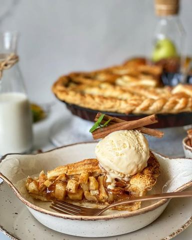

Američka pita sa jabukama

Moja beleška
SačuvanoSastojci
- Sastojci za kore
- Sastojci za fil
Priprema
Za koru je bitno da brašno prosejete, dodate mu šećer i so, izmesate ga u multipraktiku, pa tome dodate puter, promešajte malo, pa postepeno dolivate hladnu vodu. Ne mutiti ili mesiti predugo. Ne treba da bude glatko testo. Peskovito, prebacite na radnu površinu, umesite, podelite na dva dela pa u providnu foliju i u frižider na hladjenje nekih pola sata, sat. Za to vreme taman pripremate fil, jabuke seckate ili na sitne kockice, kao ja ili na tanje snite. Dodate sve začine, umešate. Pa onda razvučete jednu koru, ivice treba malko da prelaze rub tepsije (moja je 26cm prečnik). Sipate jabuke, a sa gornjom korom pustite masti na volju. Bitno je da pita diše, tj ima otvore. Pre ubacivanja u rernu je premažite belancetom. Ona se peče prvih 20 minuta na 200C, a potom još 40 minuta na 175C. Kada promenite temperaturu tada i prekrijte folijom pitu kako gornja kora ne bi gorela. Ja sam preoduševljena, malo je reci koliko se tooopi u ustima i koooliko je taj fil unutra savršen!
Originalni opis sa Instagrama
Ova pita je san!!! Bukvalno! Ljudi moji, znate onaj osećaj kad se sva moguća čula probude. Ovaj ukus nepca pamte! O itekako! Znam da me stalno hvalite kako su mi slike divne i kako lepo postavim hranu, ovog puta mislim da slikom nisam uspela ni pola da prenesem. A kako mi kuća mirise..? Uh. A i šta da vam pričam kad sam na porodjaj sa prvim detetom otišla posto sam pojela mnooogo mamine pite sa jabukama! Mama, danas te čeka toplo parče i to sa kuglom sladoleda od vanile! 💗 Sastojci za kore: • 300 gr brašna + malo za posipanje • 225 gr hladnog putera iseckanog na kockice • 100 ml bas bas hladne vode • 2 kašike šećera • 1 kašičica soli Sastojci za fil: • 6 većih jabuka (zlatni delišes) • 200 gr smedjeg šećera • 3 kašike gustina • 1 kašika soka od limuna • 1 kašika ekstrakta vanile • 2 kašičice cimeta • malčice muskatnog oraščića • 2 kesice burbon vanile • 20 gr putera iseckanog na kockice • 1 belance Za koru je bitno da brašno prosejete, dodate mu šećer i so, izmesate ga u multipraktiku, pa tome dodate puter, promešajte malo, pa postepeno dolivate hladnu vodu. Ne mutiti ili mesiti predugo. Ne treba da bude glatko testo. Peskovito, prebacite na radnu površinu, umesite, podelite na dva dela pa u providnu foliju i u frižider na hladjenje nekih pola sata, sat. Za to vreme taman pripremate fil, jabuke seckate ili na sitne kockice, kao ja ili na tanje snite. Dodate sve začine, umešate. Pa onda razvučete jednu koru, ivice treba malko da prelaze rub tepsije (moja je 26cm prečnik). Sipate jabuke, a sa gornjom korom pustite masti na volju. Bitno je da pita diše, tj ima otvore. Pre ubacivanja u rernu je premažite belancetom. Ona se peče prvih 20 minuta na 200C, a potom još 40 minuta na 175C. Kada promenite temperaturu tada i prekrijte folijom pitu kako gornja kora ne bi gorela. Ja sam preoduševljena, malo je reci koliko se tooopi u ustima i koooliko je taj fil unutra savršen! Hvala ti @ivana_lalicki_photography na sjajnom receptu! • • • #americkapita #americkapitasajabukama #pitasajabukama #americanapplepie #cimet #mirisnakuca #topaodom #zadovoljnahr #uspjesnazena #dezert #idejezadezert #kreativnioktobar